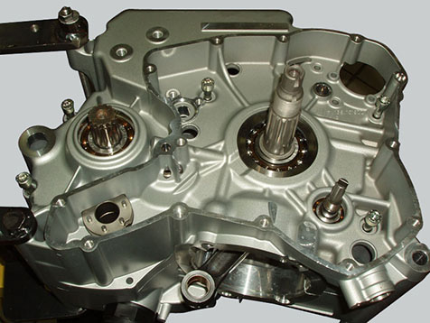
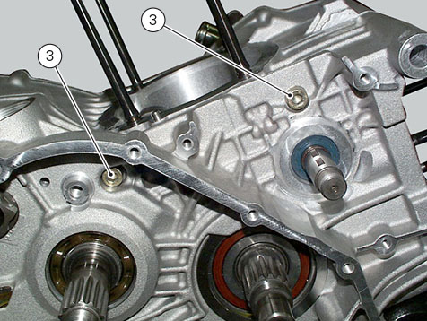

Use two screwdrivers to remove the snap ring (1) from the timing layshaft (2) on the clutch-side crankcase half.
Warning
Take care to avoid scoring the surface of the shaft while removing the snap ring.
Undo the crankcase half screws on the chain side.

Undo the two screws (3) on the clutch side near the vertical cylinder seat.

Reuse the generator cover or a service cover with puller (B) no. 88713.1749 fitted. Secure cover to crankcase half with some of the original screws and begin separation by turning the central pin of
the tool.
Tap the end of the gearbox secondary shaft with a plastic mallet to separate the crankcase halves.
Note
Take care not to lose the shim washers on the shafts and on the selector drum.
Remove the gearbox shafts and the gearbox selector drum from the crankcase halves as described in Sect. Removing the gearbox
assembly. Drive out the crankshaft (A) using a plastic mallet, paying attention to the snap ring.
Remove the timing layshaft (2).
Remove screws (4), pipes (5) and collect O-rings (6).